Source-art stone paving, mosaic landings inside bridge ends, and the bright lounge seating grid removed. Island artwork and navigation preserved.
Map TMJ · Repair validation · Exact runtime manifest · Publication record
Reviewed source: 16deefa8a8382129cea7a45227fc306f2bfabfc1. Parent visually reviewed the east/north landings and lounge captures and authorized publication. All16 landing lanes passed real-game mouse/keyboard checks. Geometry and seat definitions remain unchanged.
Original island paving varies; mosaic thresholds deliberately separate those grids. Short bridge performance samples remained about56 FPS; no whole-map60 FPS guarantee. Existing native upright seating and water/audio limitations remain. No production game-room or engine change.
Candidate hold notices in the linked source report predate publication authorization. Earlier repair screenshots in other directories are historical.
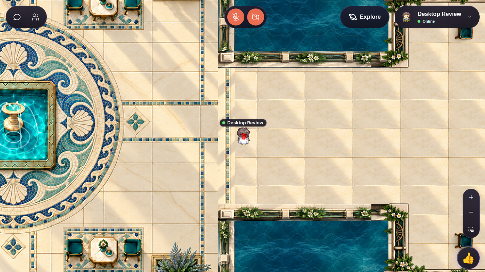
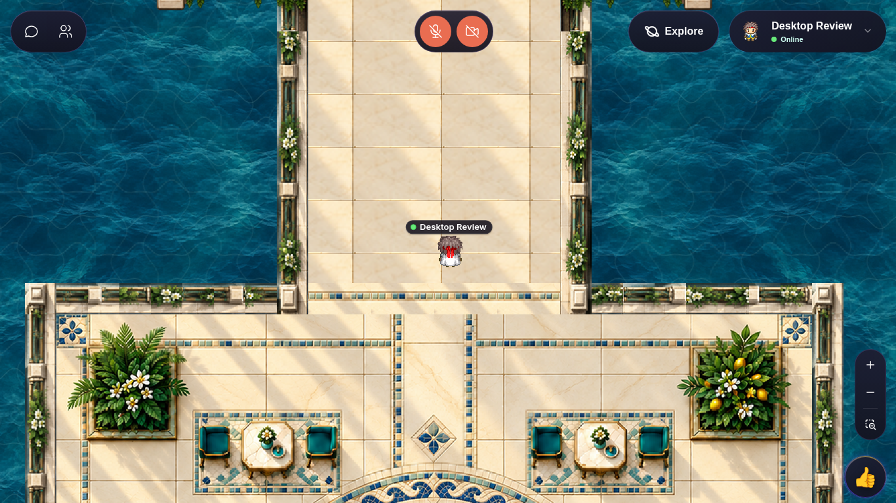
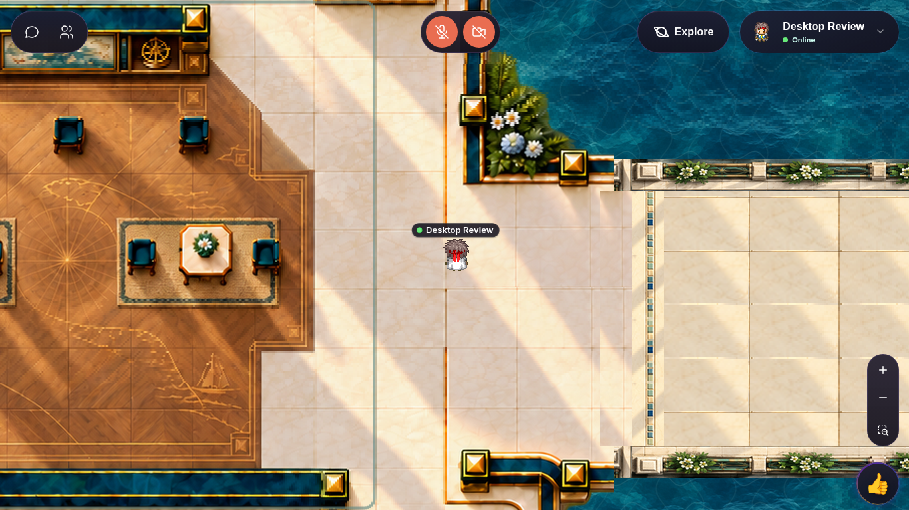
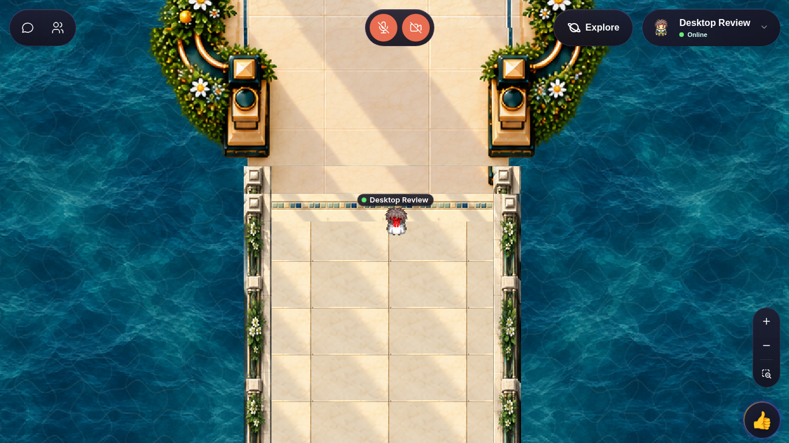
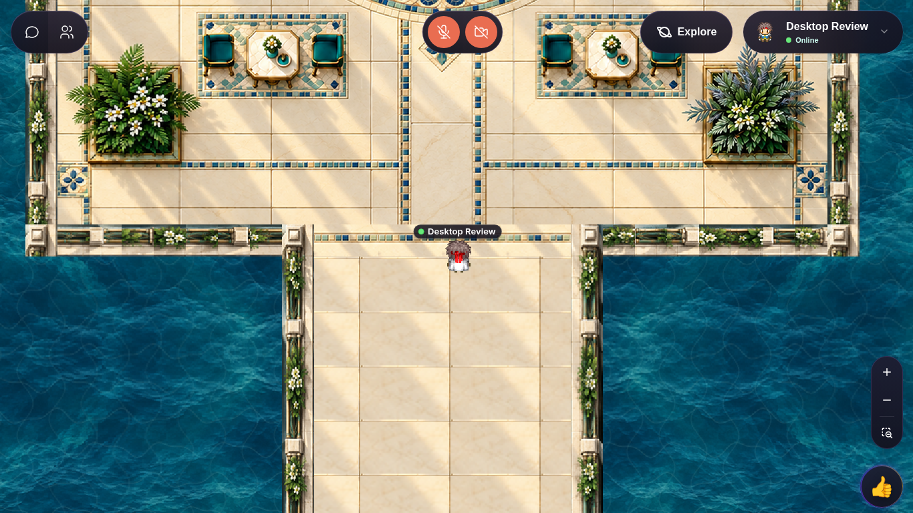
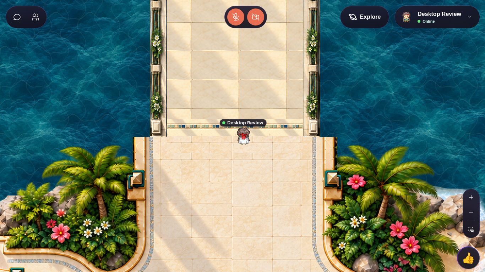
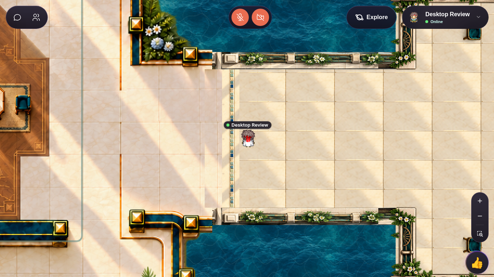
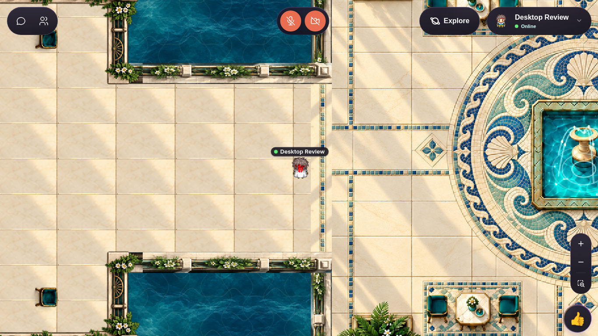
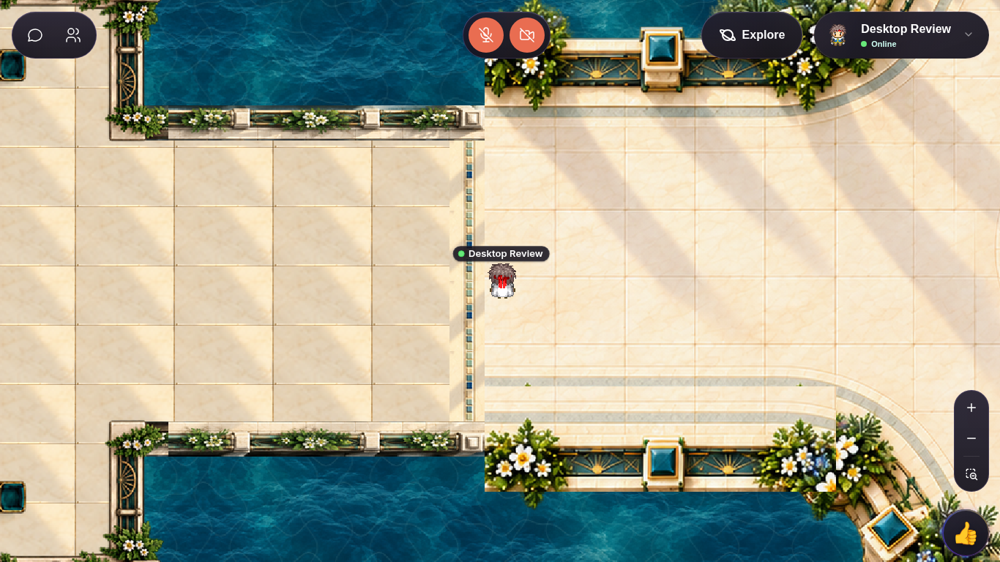
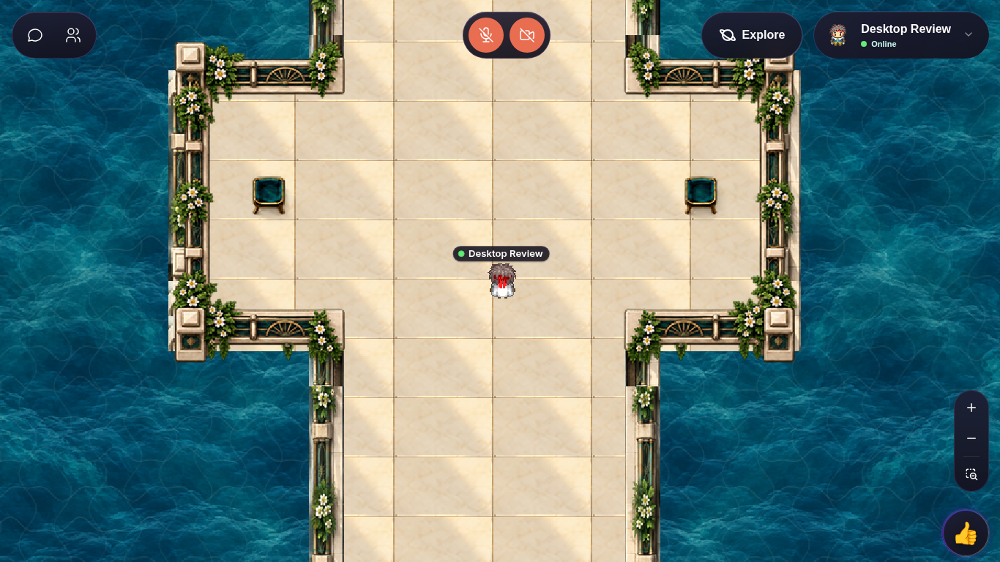
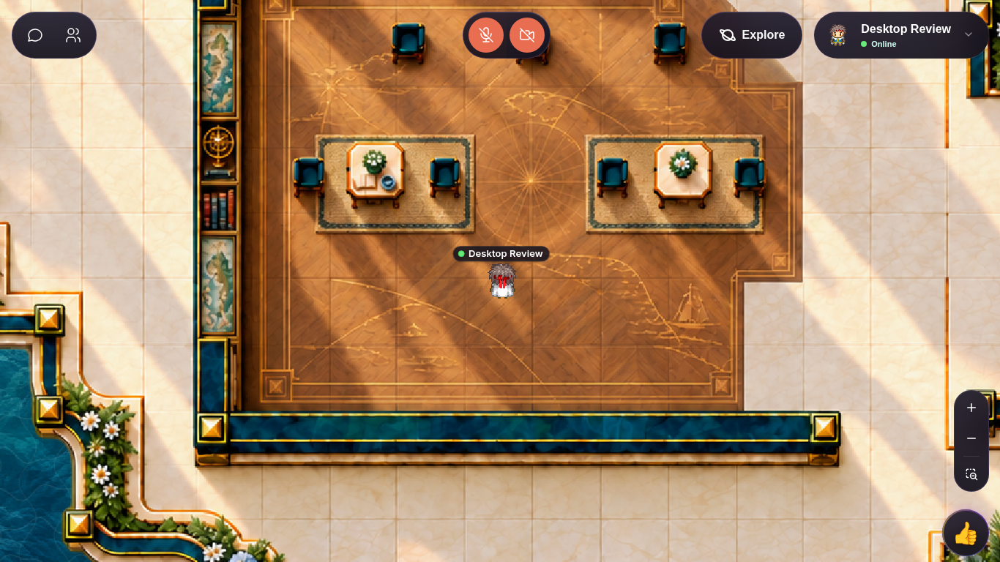
Historical unchanged-water footage: Court · Garden. These earlier videos do not show the revised bridge surfaces.